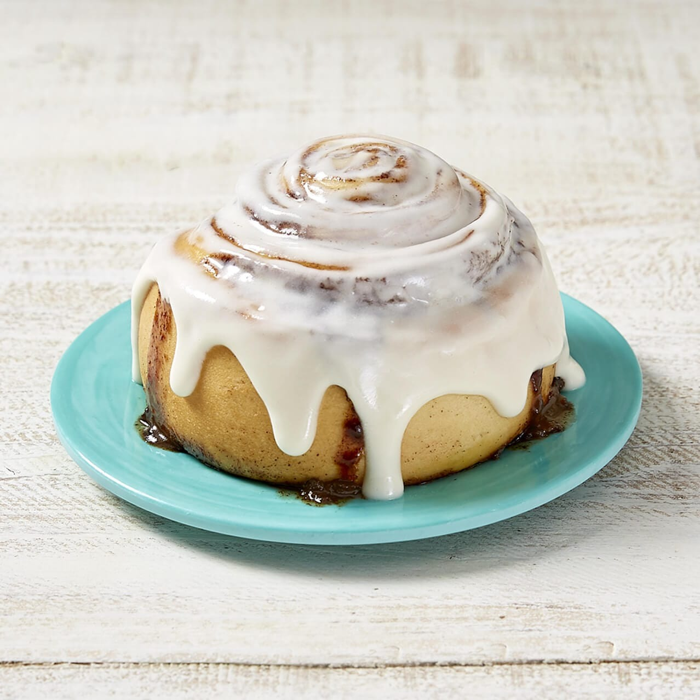

Cinnabon recipe

Description
What's the best thing to go with a hot cup of coffee in the morning?
Well, A freshly baked Cinnabon roll ofcourse! And that's what we're making today.
Ingredients
- Flour
- Milk
- Sugar
- Yeast
- Vanilla powder
- Melted Butter
- Ground Cinnamon
Steps
- Add yeast into a bowl then add some warm milk and let it rest for 10 minutes.
- Add flour into the yeast and some melted butter.
- Make sure the dough has no bubbles and let it rest for an hour.
- Roll out the dough and apply the mix of cinnamon and sugar/vanilla powder onto the dough.
- Roll the dough as smooth as possible and then use string to cut it into nice rolls.
- Let them rest in a pan for 45 minutes.
- Put them into the oven for 30 minutes and enjoy!